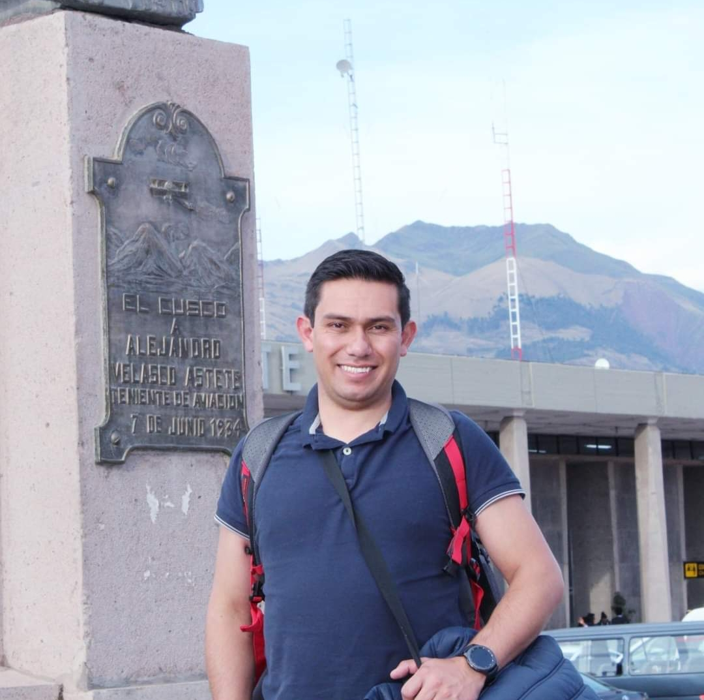

Contacto:
Telefono: 310 8563 275
Correo: miguelcorrea15@hotmail.com
Residencia: Tabio Cund.
Telefono: 310 8563 275
Habilidades
Pensamiento analitico y critico
Trabajo en equipo
Apertura hacia los demas
Aprendizaje rapido